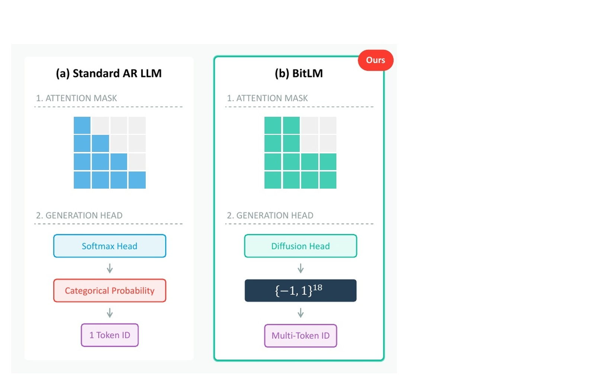
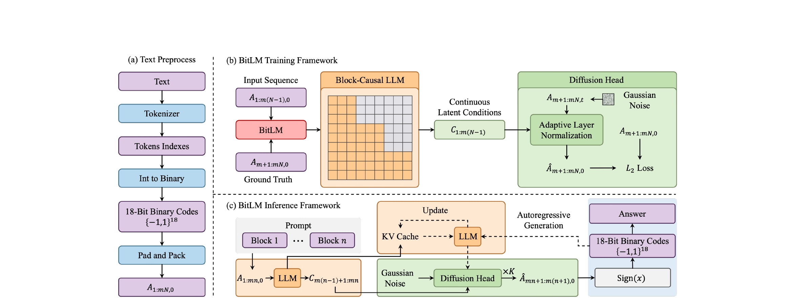
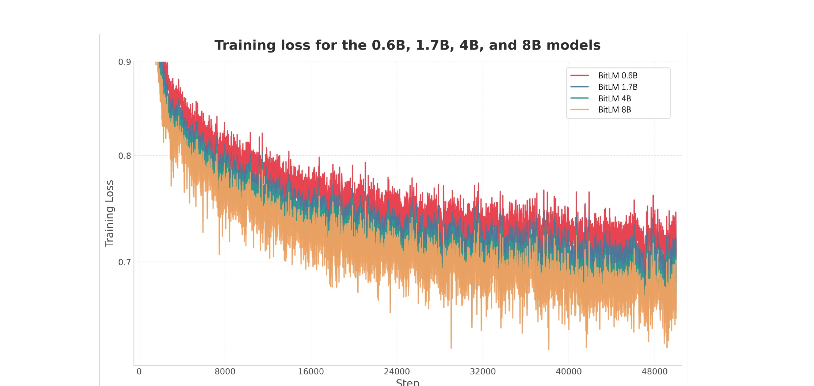
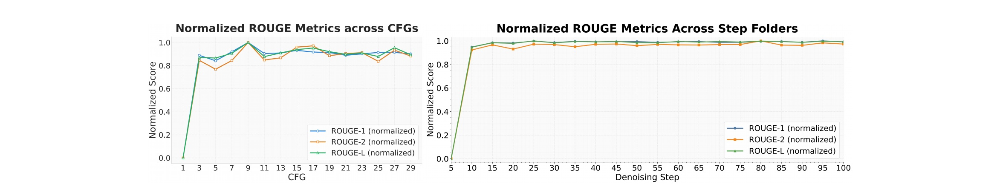
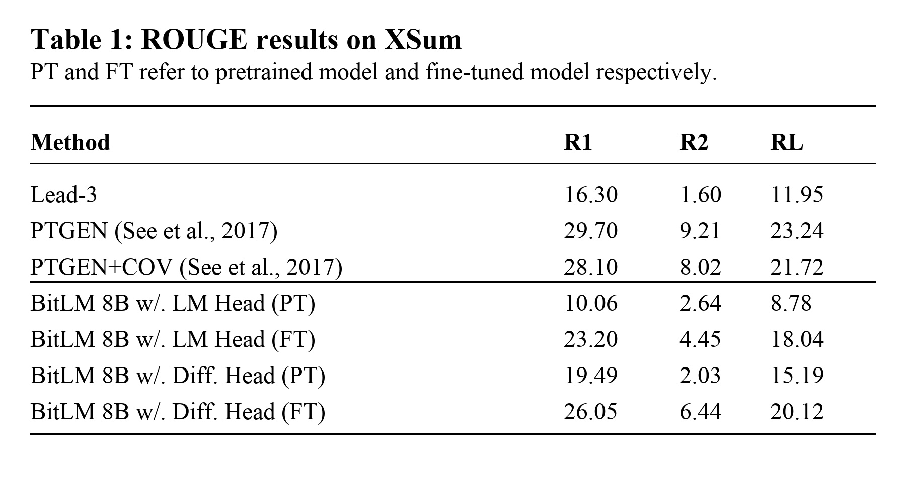

BitLM：用二进制连续扩散解锁多 Token 语言生成
Shaobin Zhuang 等来自上海交通大学、香港中文大学 MMLab、中国科学院自动化所与深圳先进技术研究院的这篇 BitLM: Unlocking Multi-Token Language Generation with Bitwise Continuous Diffusion 把大语言模型的输出接口从“大词表 softmax 分类”改写成“固定长度二进制码上的条件扩散去噪”。一作主机构按首页标注为上海交通大学，合作机构包括香港中文大学 MMLab、中科院自动化所和中科院深圳先进技术研究院；截至本次阅读，未核验到独立代码或项目仓库。阅读重点不是把它看成又一个 speculative decoding 加速器，而是看它如何把“下一个 token”这个范式中的输出几何、训练目标和推理链路整体换掉。
1. 背景和问题
现代自回归语言模型的成功很大程度建立在一个非常稳定的接口上：Transformer backbone 根据前缀算出上下文 hidden state，随后语言模型头把这个 hidden state 映射到 vocabulary simplex 上的概率分布，采样或贪心得到一个 token id，再把这个 token 追加回上下文。这个范式工程上成熟、训练稳定、可扩展性已经被 GPT、PaLM、Llama、Qwen 等模型反复验证，但它也把语言生成固定成“一次做一个离散类别决策”。当模型要输出一个短语、一个实体名、一个固定搭配或一个多 token 代码片段时，语义上这些单位往往是联合决定的，可标准 softmax head 仍然把它们拆成逐位置的串行分类。论文认为，这个瓶颈不只是 decoder 实现慢，而是 output interface 本身把语言的多 token 结构压扁成了连续的单点 categorical choice。
过去几年围绕这个瓶颈已经有许多路线。Speculative decoding、blockwise decoding、Medusa、多 token prediction 等方法通常仍保留原来的 vocabulary softmax，只是在推理阶段额外提出候选、验证候选或加辅助头；它们能减少主模型调用次数，但本质上仍要围绕标准自回归分布工作。非自回归和半自回归方法放松因果分解，能一次预测多个位置，但往往牺牲了自回归模型最擅长的左到右条件建模。文本扩散模型则把生成改成迭代 refinement，可早期路线常在 embedding、mask、simplex 或 categorical state 上工作，如何同时保留因果语言建模的可靠性和块内并行生成的自然性并不简单。BitLM 的切入点是：不要先问怎样让 softmax 更快，而是问 token id 是否必须作为 atomic class 输出。
论文的核心假设是，token id 可以被表示成固定长度二进制码。若词表大小为 $V$，只要 $B=\lceil \log_2 V\rceil$ 位就能覆盖所有 token id；在实验中 $B=18$。一旦 token 从 vocabulary simplex 上的类别点变成 $\{-1,1\}^B$ 超立方体上的顶点，生成就不再只是“选一个类别”，而是“在连续噪声到二进制顶点之间逐步去噪”。这个转化看似只是编码重参数化，但它改变了生成头面对的几何结构：softmax 让每个位置独立做大词表分类，binary diffusion head 则可以在多个 token、多个 bit channel 之间建立联合去噪动态。BitLM 因此把“多 token 生成”从外部解码技巧提升为模型原生输出接口的一部分。

这张图直观表达了 BitLM 的问题重构。左侧标准 AR LLM 使用严格 causal mask，generation head 是 softmax head，输出 categorical probability 后落到一个 token id；右侧 BitLM 改成 block-causal mask，generation head 是 diffusion head，输出空间是 $\{-1,1\}^{18}$，最终一次实现 multi-token ID。这里最重要的不是右侧多了一个扩散模块，而是两个层面的同步变化：第一，注意力从逐 token causal 变成块级 causal，块内 token 可相互可见，块间仍保持左到右依赖；第二，输出从词表概率变成二进制码去噪，块内多个 token 可以作为一个结构化对象被联合实现。这使得 BitLM 与 speculative decoding 有本质区别：后者通常是对已有 AR 模型分布的提案和验证，BitLM 则直接定义了另一种生成参数化。
从研究价值看，这篇论文把三个原本分散的线索连接起来：自回归语言建模提供可靠的因果上下文，扩散模型提供迭代细化的生成机制，Analog Bits/BitDance 一类二进制生成方法提供离散符号与连续去噪之间的桥梁。BitLM 的问题意识也更偏架构探索而不是立刻追求 SOTA：它要证明“大词表 softmax 不是唯一可行的语言模型输出接口”，并观察在 0.6B 到 8B 规模上是否能稳定预训练、能否通过下游摘要任务获得非平凡性能。因此读这篇文章时，不能只盯着 XSum ROUGE 是否打赢传统 pointer-generator，而要看它是否打开了一个可被后续模型继续优化的设计维度：symbolic output geometry。
2. 方法
2.1 整体架构：backbone 与 diffusion head 的分工
BitLM 的方法可以概括为“标准因果上下文计算 + 块级二进制扩散实现”。模型仍保留一个 LLM backbone，用来根据已实现的文本块计算上下文状态；但它不再使用 vocabulary softmax head 直接预测下一个 token，而是把下一块 $m$ 个 token 的二进制码看成一个连续去噪目标，由轻量 diffusion head 在条件上下文 $C^{(n-1)}$ 下联合还原。论文中实验默认 block size 为 $m=4$，意味着每次 backbone 更新后，diffusion head 负责并行实现未来 4 个 token 的二进制表示。块间保持自回归顺序，块内通过扩散过程联合生成。
整体概率分解先被改写为块级形式：
符号解释：$y_{1:L}$ 是长度为 $L$ 的 token 序列，$y^{(n)}$ 表示第 $n$ 个由 $m$ 个 token 组成的 block，$y^{(

Figure 2 是理解方法最重要的图。左侧 text preprocess 把文本经 tokenizer 得到 token indexes，再转成 18-bit binary codes，并通过 pad and pack 形成 $A_{1:mN,0}$。中间训练框架中，输入序列前一部分被送入 Block-Causal LLM，ground truth 的下一块二进制码作为 diffusion head 的监督目标；Block-Causal LLM 输出 continuous latent conditions，diffusion head 接收高斯噪声、timestep 和条件后预测 clean binary code，损失是 $L_2$。下方推理框架则显示 prompt block 先进入 LLM，生成条件状态；目标 block 从 Gaussian Noise 开始，经 diffusion head 迭代 $K$ 次，再通过 $\operatorname{Sign}(x)$ 回到 18-bit binary codes，映射成 token 后作为 answer 追加，并更新 KV cache。这个图强调了 BitLM 的分工：backbone 负责“根据已生成内容判断下一块应是什么”，diffusion head 负责“把这个判断具体结晶为多个 token 的离散符号”。
2.2 Binary Token Interface：把 token id 放到二进制超立方体
BitLM 首先定义一个固定的 token-to-bit 映射。设 tokenizer 的词表大小为 $V$，二进制码长为：
符号解释：$V$ 是 tokenizer vocabulary size，$B$ 是覆盖所有 token id 所需的最短二进制位数。论文实验里 $B=18$，因此 $2^{18}$ 个二进制模式覆盖 tokenizer 的 id 范围；多余的二进制模式不分配给合法 token。对任意 token id $y_i\in\{0,\ldots,V-1\}$，映射为：
符号解释：$\operatorname{bin}_B(y_i)$ 是 $y_i$ 的 $B$ 位 0/1 整数表示；乘以 2 再减 1 将 $0/1$ 变成 $-1/+1$，使 token 对应超立方体顶点。这里的 $\phi$ 不是学习出来的语义 codebook，而是固定整数编码。这样做的好处是变量受控：tokenizer 不变，文本切分不变，研究者可以更清楚地观察“输出接口从 softmax 换成 binary denoising”带来的影响。坏处也很明显：相邻二进制码不一定语义相近，token id 的整数顺序也不是语义结构，因此扩散 head 学到的是一种工程上可还原的符号几何，而不是天然语义空间。
对整个序列，论文把 clean binary codes 堆叠成矩阵：
随后 padding 到 block size 的整数倍：
并切成：
符号解释：下标 $0$ 表示 clean state，区别于后续扩散过程中的 noisy state $A_t$；$A^{(n)}_0$ 是第 $n$ 个 block 的 clean 二进制矩阵，包含 $m$ 个 token、每个 token $B$ 个 bit。为了让这些二进制码能进入标准 LLM backbone，BitLM 用一个 position-wise MLP 把 $B$ 维 bit channel 提升到 hidden size $d$：
符号解释：$E_{1:L}$ 在功能上替代传统 token embedding lookup。不同之处在于 embedding 不再由 token id 查表得到，而是由固定 bit code 经过 MLP 投影得到。训练阶段，ground truth token 可以直接转成 clean binary code 再输入 MLP；推理阶段，diffusion head 输出经过 sign 后也能通过同一个 MLP 回写到 backbone。这个设计让输入端和输出端都围绕同一个 binary interface 闭环，避免了“输出是 bit，输入仍是 id embedding”造成的接口割裂。
2.3 Conditional Denoising：在条件上下文下还原 clean binary block
二进制接口建立后，下一步是定义如何从噪声还原 token block。BitLM 不把每个 bit 当成独立二分类，而是借鉴 Analog Bits 与 BitDance，把 clean binary block 嵌入连续空间，通过 straight-line interpolation 构造 noisy state。给定 clean block $A^{(n)}_0$，采样 timestep 与高斯噪声：
然后构造：
符号解释：$t=0$ 时 $A_t$ 就是 clean binary code，$t=1$ 时接近纯高斯噪声；$\epsilon$ 的形状与一个 block 的 bit matrix 一致。这个 formulation 比离散 bit flip diffusion 更接近连续 denoising/flow matching 的写法，方便用轻量神经网络预测 $x_0$。在上下文条件 $C^{(n-1)}\in\mathbb{R}^{m\times d}$ 下，DiffHead 预测 clean block：
符号解释：$C^{(n-1)}$ 来自上一块的 block-causal LLM hidden states，承载“根据前文下一块应是什么”的语言条件；$A^{(n)}_t$ 是当前需要去噪的 noisy target block；$\hat{A}^{(n)}_0$ 是模型预测的 clean analog bits。这里的 DiffHead 被作者刻意设计得轻量，论文贡献不在复杂 denoiser，而在把 language output interface 改成 conditional bitwise denoising。
条件注入使用 adaptive layer normalization：
符号解释：$h\in\mathbb{R}^{m\times d_h}$ 是 diffusion head 中间层，$e(t)$ 是 timestep embedding，$\gamma$ 和 $\beta$ 是由上下文与时间共同生成的 token-wise affine modulation，$\odot$ 是逐元素乘法。直觉上，AdaLN 让同一个 noisy binary block 在不同上下文下被去噪到不同 token continuation；同样的噪声，如果前文语义不同，$C^{(n-1)}$ 会改变规范化后的尺度和平移，进而改变最终 clean code 预测。
训练目标是简单的 $x_0$ prediction：
符号解释：模型直接回归 clean binary code，而不是预测噪声 $\epsilon$ 或 score；损失对每个 block 的 $m\times B$ 个连续 bit channel 计算平方误差。训练后，推理阶段还需要把连续预测投影回离散顶点：
符号解释：$\operatorname{sign}$ 将正值变成 $+1$，负值变成 $-1$；随后 $\phi^{-1}$ 把 $-1/+1$ 还原成 0/1，再解释为整数 token id。这个 hard projection 是 BitLM 的关键边界：训练在连续空间优化，最终文本仍必须落回离散 token 集合。若去噪结果靠近错误顶点，或者落到未分配给合法 token 的二进制模式，就可能引入生成错误；论文当前没有把 learned semantic code 或 invalid code correction 做成重点，这也是后续可改进方向。
2.4 Block-Causal Context Computation：块内可见、块间因果
BitLM 要同时保留因果语言建模和块内并行，因此注意力 mask 不能简单使用标准 causal mask，也不能完全放开。论文定义 block-causal backbone：
符号解释：$E_{1:L}$ 是由二进制码 MLP 提升后的输入序列，$M_m$ 是 block size 为 $m$ 的 attention mask，$C_{1:L}$ 是 backbone 输出的上下文状态。对位置 $i$，定义其 block index：
注意力 mask 为：
符号解释：若 key 位置 $j$ 所在 block 不晚于 query 位置 $i$ 所在 block，则允许注意；若 $j$ 来自未来 block，则禁止注意。与标准 causal mask 相比，同一个 block 内的所有 token 彼此可见；与非自回归模型相比，未来 block 仍不可见。$m=1$ 时，$b(i)=i$，mask 退化为标准 left-to-right causal attention。这个 mask 是 BitLM 的并行性来源之一：块内 token 在上下文计算时不再严格按位置串行，而是作为同一个 realizable unit 处理。
论文进一步定义第 $n$ 个 block 的上下文状态：
生成第 $n$ 个 target block 时使用上一块状态 $C^{(n-1)}$：
符号解释：这是 shifted-by-one 的训练/推理对齐。backbone 先总结已经实现的 block，然后 diffusion head 用这个总结生成下一块。$C^{(0)}$ 可由 learned BOS block 或外部 prompt 提供。这个 one-block shift 非常重要：如果让同一块的 hidden state 直接预测自己，训练会泄漏 ground truth；如果每个位置都只看前一个位置，又回到单 token causal。BitLM 的做法是在 block 级别建立“当前块实现后，条件化下一块”的循环。
2.5 Joint Block Realization：不把块内 token 和 bit 独立分解
BitLM 与把 bit 当成独立 binary classifier 的方法不同。论文明确指出，它不采用如下分解：
符号解释：右侧表示对 block 内每个 token 位置 $i$、每个 bit channel $b$ 独立采样；这会把一个短语内部的 token 相关性和一个 token 内 bit 之间的组合约束都打散。BitLM 避免这个独立分解：DiffHead 的输入是完整 $A^{(n)}_t\in\mathbb{R}^{m\times B}$，输出也是完整 $\hat{A}^{(n)}_0\in\mathbb{R}^{m\times B}$，块内位置和 bit 之间的依赖由 denoising network 的联合动态隐式建模。直觉上，这更接近“一次实现一个短语片段”，而不是“一次猜 72 个互不相关的二值标签”。
完整训练目标是对所有有效 block 的扩散损失求平均：
符号解释：$N$ 是 block 数，padding 位置在实践中会被 mask 掉；每个 block 的 loss 来自前面的 $x_0$ prediction。论文把训练流程总结为 Algorithm 1：先将 token ids 变成 binary codes，padding 并切块；再用 MLP 提升到 hidden space；BlockCausalLLM 计算所有 block context；对每个 block 采样 $t$ 与 $\epsilon$，构造 $A_t$，由 DiffHead 在 $C^{(n-1)}$ 条件下预测 $A_0$，累计平方误差。这个 pipeline 看起来复杂，但从工程实现角度可以拆成三层：数据层负责 token-to-bits，backbone 层负责 block-causal hidden states，head 层负责 conditional denoising loss。
这里有一个值得注意的设计取舍：BitLM 的二进制码是固定整数码，而不是 learned code。固定码使系统容易复现，也避免引入额外 tokenizer 学习变量；但它也可能增加 denoising 难度，因为 token id 相邻不代表语义相近。假设两个语义相似 token 的二进制码汉明距离很远，扩散 head 需要学习更复杂的映射才能在语义空间和 bit 空间之间对齐。论文的实验证明这种固定码至少可训练、可扩展、能做下游任务，但并没有证明它是最优码。后续若引入语义保持的 learned binary tokenizer、错误纠正码或 hierarchical bit code，可能进一步改善 lexical realization 的精度。
2.6 Inference：从高斯噪声到 token block 的迭代求解
推理阶段交替执行“backbone 更新”和“block denoising”。给定 prompt，先把 prompt token 转成已实现的 binary blocks，经 MLP 输入 backbone，得到当前上下文 $C^{(n-1)}$ 和 KV cache。然后初始化下一块为高斯噪声：
在每个去噪步，先预测 clean block：
再按 ODE/flow matching 风格向 clean prediction 移动：
最后投影：
符号解释：$K$ 是去噪步数，论文实验选择 $K=15$；每一步都在当前 noisy state 和预测 clean state 之间做线性更新。当 $k$ 逐步减小，$A_t$ 从高斯噪声靠近二进制顶点。得到 $\bar{A}^{(n)}_0$ 后，模型通过 $\phi^{-1}$ 得到 token id，追加到输出中；若 block 内出现 EOS 就停止，否则把新 block 再经 MLP 输入 backbone，更新 KV cache，继续生成下一块。
这个推理链路说明 BitLM 的速度收益来自两个方向。第一，backbone 每次更新对应 $m$ 个 token，而标准 AR 每个 token 都要更新一次主干；在大模型中，backbone 往往是最重的部分。第二，diffusion head 是轻量模块，虽然需要 $K$ 步，但每步处理的是小维度 $m\times B$ binary state，而不是整个大词表 softmax。第三，块内 token 的生成误差不是通过接受/拒绝机制逐个修正，而是在同一个连续状态中被同步拉向 clean code，这使得模型可以在一次 block realization 中同时协调短语内部的词序、搭配和 bit-level consistency。这个特性也解释了它为什么不等同于 multi-token prediction head：后者通常仍然围绕多个分类头或多个未来位置的 softmax loss，BitLM 则让未来块本身成为 diffusion state。真正的延迟收益取决于 $m$、$K$、DiffHead 成本、backbone KV cache 更新成本和硬件并行效率之间的平衡。若 $K$ 太大，扩散迭代会抵消 block parallelism；若 $m$ 太大，块内联合实现难度会升高，语言质量可能下降。论文当前固定 $m=4$、选择 $K=15$，更像是证明可行性的中间点，而不是最终最优系统配置。
从实现角度还要注意 prompt 边界。若 prompt 长度不能被 $m$ 整除，需要和训练时一样 padding 或补齐到 block 对齐；若生成 block 中间出现 EOS，系统必须截断后续 token，而不是把整块都暴露给用户。KV cache 更新也不是按 token 逐个推进，而是在一个 block 被 sign projection 并映射回 token 后，再把该 block 的 MLP embedding 喂回 backbone。这样做保持了训练中的 one-block shift，但也意味着实现者必须严格区分 clean realized block、noisy target block 和 condition block；三者混淆会导致目标泄漏或缓存错位。
3. 实验结果
3.1 实验设置：先证明能预训练，再看摘要迁移
实验部分的目标比较克制：作者没有声称 BitLM 已经全面超过成熟 AR LLM，而是先验证三个问题。第一，固定二进制输出接口是否能在较大 token 规模上稳定预训练；第二，模型规模从 0.6B 到 8B 增大时 loss 是否继续下降；第三，在 XSum 摘要任务上，diffusion head 是否比同架构的 LM head 变体更有优势，并达到非平凡的下游生成能力。预训练数据是 FineWeb 的 350B tokens 子集，训练 1 epoch；下游任务使用 XSum 训练集微调。LLM backbone 按论文描述采用 Qwen-3 架构，diffusion head 采用 BitDance 的 diffusion head 架构，block size 为 $m=4$。
训练超参方面，作者使用 AdamW，学习率 $1\times 10^{-4}$，$\beta_1=0.9$，$\beta_2=0.95$。每个样本开头拼接 $m$ 个 $\langle bos\rangle$ token，末尾拼接 $\langle eos\rangle$ 直到长度能被 $m$ 整除；训练时把多个样本 pack 成长度 16384 的 sequence。推理时使用 ODE solver，denoising step 设为 $K=15$，classifier-free guidance 设为 9.0。这个设置体现了 BitLM 当前仍处于研究原型阶段：它验证了二进制扩散接口在大规模预训练和摘要微调中的基本可行性，但没有给出完整的通用 benchmark、吞吐量表、显存表或与现代 LLM decoding 系统的端到端延迟比较。
3.2 预训练可扩展性：loss 曲线说明接口可训练

Figure 3 展示了 0.6B、1.7B、4B、8B 四个 BitLM 版本在 FineWeb-350B tokens 上的 pretraining loss。横轴是训练 step，纵轴是 training loss；四条曲线都随训练推进下降，且更大模型整体 loss 更低。对这篇论文来说，这张图的重要性不在于某个绝对 loss 数值，而在于它说明“固定二进制 token code + block-causal backbone + diffusion head”的组合没有在规模扩大时立即崩溃。若 binary interface 只是小模型 toy setting，8B 曲线可能出现训练不稳定、loss 不随规模改善或大幅抖动；但图中 8B 曲线保持低于较小模型，并随 step 继续下降，说明模型至少能够利用更大容量学习 bit-space lexical realization。需要谨慎的是，图中没有与标准 Qwen-style softmax LM 的同数据同规模 loss 对照，因此它不能证明 BitLM 预训练效率已经优于 AR LM，只能证明可扩展性方向是正向的。
3.3 推理超参消融：CFG 与 denoising steps 的经验选择

Figure 4 给出了两个归一化 ROUGE 曲线。左图横轴是 classifier-free guidance，纵轴是归一化分数；右图横轴是 denoising step，显示不同 $K$ 对 ROUGE-1、ROUGE-2、ROUGE-L 的影响。作者据此选择 guidance=9.0、$K=15$ 作为 XSum 推理设置。左图说明 CFG 太低时条件约束不足，分数明显差；中等区间后曲线趋稳，9 附近达到较好点。右图则说明从 5 步到 10/15 步提升明显，之后继续增加步数收益有限，甚至主要是在平台附近波动。这个结果符合扩散式生成常见取舍：去噪步数增加能提高 clean reconstruction，但推理成本线性增加；CFG 增强条件一致性，但过强可能带来模式偏置或文本多样性下降。对 BitLM 来说，$K=15$ 是关键工程参数，因为它直接决定 diffusion head 需要被调用多少次；若后续要把 BitLM 用于真实低延迟生成，需要进一步研究蒸馏、更短 schedule、自适应步数或按难度动态分配 $K$。
3.4 XSum 主结果：可行性强于竞争性

Table 1 是论文最直接的下游结果。Lead-3 baseline 为 ROUGE-1/2/L = 16.30/1.60/11.95；PTGEN 为 29.70/9.21/23.24，PTGEN+COV 为 28.10/8.02/21.72。BitLM 8B 若使用 LM Head，预训练态只有 10.06/2.64/8.78，微调后为 23.20/4.45/18.04；若使用 Diffusion Head，预训练态为 19.49/2.03/15.19，微调后达到 26.05/6.44/20.12。这个表说明两个事实：第一，diffusion head 版本明显强于 LM head 版本，尤其微调后 R1/R2/RL 都有提升，证明二进制扩散接口不是纯概念装饰；第二，它仍低于 PTGEN 和 PTGEN+COV 这类摘要专门 baseline，说明当前 BitLM 的 lexical realization、任务适配或复制机制仍不够成熟。论文正文曾写到微调后结果为 25.91/6.40/20.02，与表格 26.05/6.44/20.12 有轻微不一致；本笔记以表格数值为主，并把正文差异视为需要后续版本确认的口径问题。
从实验解释看，BitLM 在 XSum 上的意义不是“摘要任务已经赢了”，而是“替换 softmax 之后仍然能从大规模预训练迁移到下游生成任务”。XSum 是极端摘要数据集，要求模型从输入新闻中抽象出短摘要，涉及内容选择、压缩、实体和事实保持。BitLM diffusion head 的结果超过 Lead-3，也超过同架构 LM head 版本，说明它学到的不是随机 bit reconstruction，而是能在上下文条件下生成有用文本。但与 pointer-generator 系列差距仍提示：二进制块生成可能在精确复制、长距离对齐、低频实体或任务特化方面还不够强；固定整数 bit code 也可能让相近词之间没有平滑结构，导致摘要这种精确 lexical choice 任务受影响。
3.5 当前证据的边界
这组实验给出的是“可行性证据”，不是完整系统胜利。论文没有报告常见语言模型 benchmark，如 perplexity、MMLU、GSM、代码生成、多轮对话等；也没有系统报告 tokens/s、首 token 延迟、端到端吞吐、不同 batch size 的加速比、KV cache 显存、DiffHead 调用开销等工程指标。BitLM 理论上每次 backbone 更新能生成 $m$ 个 token，但 diffusion head 需要 $K$ 步，是否更快取决于硬件和实现；如果 DiffHead 很轻且可高效并行，收益可能明显，如果 $K$ 较大或实现不优化，收益会被抵消。因此，“substantially faster inference” 在论文摘要中是一个方向性主张，但本次读到的实验表格还不足以独立量化这个速度收益。
另一个边界是 code validity。$2^B$ 覆盖词表，但并非所有 binary pattern 都对应合法 token；推理时 sign projection 后若落到未使用模式，需要 inverse map 如何处理。论文没有把 invalid code rate、纠错策略或最近合法 token 投影机制作为主要实验呈现。再加上固定 token id 的 bit code 缺少语义连续性，DiffHead 学到的 bit-space geometry 可能更多是记忆 tokenizer id 映射，而不是利用语义相邻结构。若未来引入 learned binary tokenizer 或语义排序 token id，结果可能变化很大。最后，XSum 结果显示 DiffHead 优于 LM Head，但未提供同等训练资源下现代 softmax LLM 的强对照，因此还不能判断 BitLM 在质量-速度 Pareto 上相对成熟 AR 方案处在什么位置。
4. 总结
4.1 我的判断
BitLM 最值得关注的地方，是它把“多 token 生成”从解码器外部技巧推进到输出接口层。它没有沿着“如何更快采样 softmax”继续优化，而是问“大词表 softmax 是否必须存在”。这个问题很有价值，因为 LLM 架构过去几年在 backbone、数据、后训练上变化巨大，但输出头仍高度稳定。BitLM 证明了至少一种替代接口能在 8B 规模上预训练并迁移到 XSum：token 被固定编码到 $\{-1,1\}^{18}$，块内多个 token 由 conditional diffusion head 联合去噪，块间仍由 causal backbone 保证顺序依赖。它目前更像一个打开设计空间的论文，而不是可以直接替换线上 AR LLM 的系统。
4.2 工程启发与复现建议
如果要复现或继续做，第一优先级不是马上扩大模型，而是把接口边界测清楚：invalid binary code 怎么处理、不同 tokenizer id 排列对结果影响多大、learned code 是否优于固定整数码。第二，应把 $m$ 与 $K$ 做成系统消融：$m=2/4/8$ 对质量和速度的影响，$K=4/8/15$ 的质量退化曲线，以及 DiffHead latency 与 backbone latency 的真实比例。第三，需要加入现代 AR baseline 和 speculative decoding baseline，在同数据、同参数、同硬件下比较 tokens/s、质量和显存。第四，摘要任务外还应测试开放式续写、问答、代码、长上下文和事实保持，因为块内联合生成可能对不同任务有不同误差模式。
4.3 局限与后续跟进
局限至少有四点。第一，实验范围偏窄，主要是预训练 loss 和 XSum ROUGE，缺少通用 LLM 能力评估。第二，速度收益没有用端到端系统指标充分量化，$K=15$ 的 diffusion head 调用成本仍需真实 benchmark。第三，固定二进制码不保证语义结构，可能给 lexical precision 带来额外学习负担。第四，论文未核验到独立代码仓库，复现实作中的 block-causal mask、shifted target、KV cache 更新、CFG 和 invalid code 处理仍有实现不确定性。后续最值得跟进的方向是 learned binary tokenizer、adaptive block size、少步蒸馏、softmax-binary hybrid head，以及把 BitLM 放进真实推理框架测延迟。若这些问题能被解决，BitLM 可能成为探索下一代语言模型输出层的重要路线；若不能，它至少也清楚地提醒我们：next-token softmax 是历史上成功的接口选择，但未必是语言生成唯一合理的接口选择。